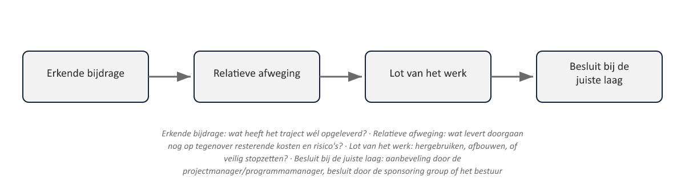

Sheet 1Titel
Project- en Programmamanagement
Niveau 3 · Deel 26: Verdedigbaar stoppen en herprioriteren
Sheet 2Wanneer voorbereiding niet genoeg blijkt
Zorgvuldige voorbereiding (deel 25) sluit niet alles uit
Wat dan: doorgaan, herprioriteren, of stoppen?
Sheet 3De sunk cost-valkuil
“We hebben hier al zoveel in gestoken…”
Geld en tijd die al zijn uitgegeven, tellen niet mee in het besluit
Sheet 4Terug naar principe 1
Ensure continued business justification (niveau 1)
Justification-theme (niveau 2)
Nooit: wat hebben we geïnvesteerd — altijd: is dit nog de moeite waard?
Sheet 5Extra verleidelijk bij grote programma's
Politieke, financiële, reputationele investering
“Stoppen voelt als persoonlijk falen”
Sheet 6De juiste vraag
Niet: hoeveel hebben we erin gestoken?
Wel: wat levert het resterende werk nog op, tegen welke resterende kosten?
Sheet 7Vier elementen van een stopadvies

1. Erkende bijdrage
2. Relatieve afweging
3. Lot van het werk
4. Besluit bij de juiste laag
Sheet 8Erkende bijdrage
Wat heeft het traject wél opgeleverd?
Geen zwaktebod — noodzakelijk voor een eerlijke afweging
Sheet 9Relatieve afweging
Wat levert doorgaan nog op, tegenover resterende kosten en risico’s?
Een vergelijking naar voren, geen terugblik
Sheet 10Lot van het werk
Wat gebeurt er met wat al is gebouwd?
Hergebruiken, afbouwen, of veilig stopzetten?
Sheet 11Besluit bij de juiste laag
Aanbeveling: projectmanager/programmamanager
Besluit: sponsoring group of bestuur
Niet zelf overnemen, niet wegduiken
Sheet 12Herprioriteren: de tussenweg
Niet alles is stoppen-of-doorgaan
Aansluitend op het “aanpassen”-besluit uit Justification (deel 13)
Sheet 13Toegepast: datakwaliteitsprobleem vlak vóór go/no-go
| Element | Toepassing op de Stelselovergang |
|---|---|
| Erkende bijdrage | De overgrote meerderheid van de data is grondig gecontroleerd en akkoord bevonden; alleen een afgebakende deelverzameling is problematisch |
| Relatieve afweging | Doorgaan met invaren voor de volledige populatie brengt een reëel risico op onjuiste, na uitvoering onherstelbare aanspraken met zich mee; uitstel van invaren voor uitsluitend de problematische deelverzameling, met een gefaseerde aanpak, beperkt het risico aanzienlijk tegen relatief beperkte extra kosten en vertraging |
| Lot van het werk | Het overgrote deel van de voorbereiding — datacontrole, communicatie, governance — blijft volledig bruikbaar; alleen de uitvoering voor de betreffende deelverzameling wordt uitgesteld |
| Besluit bij de juiste laag | De programmadirecteur legt dit advies voor aan het bestuur, dat het formele go/no-go-besluit neemt — inclusief de mogelijkheid om te kiezen voor een gefaseerde uitvoering in plaats van een volledige stop |
Gefaseerde uitvoering als verdedigbaar middenweg-advies
Sheet 14Vooruitblik
Deel 27: leiderschap en ethiek onder druk